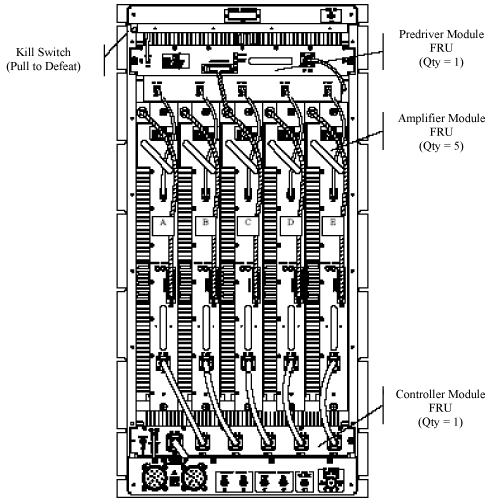

- 00000018WIA30E72E20GYZ
- id_131067303.0
- Aug 29, 2019 1:41:06 AM
8KW MNS Amp (AMT) Troubleshooting
| Required persons | Preliminary requirements | Procedure | Finalization |
|---|---|---|---|
| 1 | Not Applicable | Not Applicable | Not Applicable |
| Item | Quantity | Effectivity | Part number | Manufacturer |
|---|---|---|---|---|
| RF Test Cables Kit | 1 | - |
46-255816G1 | - |
| 4.0 RF Cable Kit | 1 | - |
46-301549G1 or 46-301927G1 | - |
| 300 MHz Scope - or equivalent | 1 | - |
46-194427P222 | - |
| RF Power Measurement Kit | 1 | - |
46-317724G2 | - |
| Magnetic Shield (if applicable) | 1 | - |
46-317725G10 | - |
| ||||
This document lists error messages and faults caused by the AMT Amp. As it is not an exhaustive list, please report any unlisted faults you experience to Service Engineering.
AMP Diagnostics
- The system status of the AMT amp is displayed on the front panel of
the AMT. The locations of the front panel LED indicators supply are shown
in Figure 1.
Figure 1. AMT RF Amp 
- The amplifier front panel indicators are described as follows:
- POWER Indicates the presence of DC voltage in the control module. This indicator is lit when the circuit breaker is in the "ON" position.
- STANDBY When lit, (and READY LED is unlit), amplifier is in the standby state.
- UNBLANK commands from J1 or J2 will not cause the amplifier to unblank.
- READY Indicates amplifier is in operational state.
- UNBLANK Amplifier is receiving UNBLANK commands from J1 or J2.
- FAULT Indicates a fault has been detected. Refer to status LEDs and/or status code.
Reference Documents / Vendor Manuals
- FRU Manual for 3T.
- Block Diagrams.
- MNS Installation.
- MNS RF Chain Troubleshooting.
Problem / Solution Table
- In many cases, problems with the AMT will be displayed via fault codes. Six STATUS CODE LED indicators, labeled left-to-right, 5 to 0, are provided on the front of the cabinet. These indicators (as pictured in Figure 1) display status and fault codes.
- Within 5 seconds of power-up, the correct fault status is displayed. During this 5-second power-up interval, the fault status may not be correctly displayed. All faults cause the system to shut down by means of going into the standby mode. In response to a fault readback from the amplifier the controlling system may assert a Standby condition through the J1 connector. Therefore, the Status LEDs masks out this condition during a fault and the only means of recovering from a fault condition is to RESET the system by cycling the AC power.
-
Table 4 shows fault
codes, a description of each fault, the recommended action and, if applicable,
necessary replacement parts to overcome the fault that can be seen via the
Fault Code LEDs. Table 5 shows
a list of problems, probable causes and solution recommendations
Note:
Cycling power will initiate the five minute warm-up timer. The amplifier will remain in standby until this timer expires.
Table 4. Fault Codes per Fault Code LEDs Status Code Status Code Operation LEDs Description of GE Field Action Seen At: LED's & J1 5 4 3 2 1 0 In Hex
P
O
W
E
R
S
T
A
N
D
B
Y
R
E
A
D
Y
U
N
B
L
A
N
K
F
A
U
L
T
0 0 0 0 0 0 Hex 00 off off off off off No power to amplifier or interface disconnected Check cabling of AMT amplifier. Refer to 3T EXCITE MNS Installation 0 0 0 0 0 1 Hex 01 ON off ON off off Operational State. Ready for RF. Warm up time has expired, ENABLED is active, and no UNBLANK command from either J1 UNBLANK or J2 UNBLANK No action - Amp is operational and waiting for system interaction 0 0 0 0 0 1 Hex 01 ON off ON ON off Operational State with UNBLANK commands from either connector; J1 UNBLANK or J2 UNBLANK No action - Amp is operational and waiting 0 0 0 0 1 0 Hex 02 ON ON off off off Transient State, in warm up. UNBLANK commands from either J1 UNBLANK or J2 UNBLANK will not cause the amplifier to UNBLANK Amp is warming up. If no response after 5 minutes, cycle AC power 0 0 0 0 1 1 Hex 03 ON ON ON off off Standby, ENABLED is NOT active, & warm up has expired. UNBLANK commands from either J1 UNBLANK or J2 UNBLANK will not cause the amplifier to UNBLANK Cycle AC Power. If problem persists, refer to Table 5 for suggestions, else call support 0 0 0 1 0 0 = 1 0 0 0 0 0 Hex 04 = Hex 20 - - - - - Not used and Led's in don't care state. If a Status code of 04-20 Hex is showing it is presumed an unknown failure is present Refer to Table 5 for suggestions, else call Service 1 0 0 0 0 1 Hex 21 ON ON ON off ON Power Supply Fault See Table 5 1 0 0 0 1 0 = 1 0 0 1 1 1 Hex 22 = Hex 27 - - - - - Not used and LED's in don't care state. If a Status code of 22-27 Hex is showing it is presumed an unknown failure is present Refer to Table 5 for suggestions, else call Service 1 0 1 0 0 0 Hex 28 ON ON ON off ON OVERDRIVE. Drive level into amp exceeds specification (>7dBm) Apply RESET command (cycle AC Power) 1 0 1 0 0 1 Hex 29 ON ON ON off ON OVERTEMP. Temperature exceeds (>70 Deg C) Allow system to cool. Check for fan blockage (See Table 5). Cycle AC Power 1 0 1 0 1 0 Hex 2A ON ON ON off ON EXCESSIVE PEAK POWER. Peak Power from amplifier exceeded (>8200W) Check protocol. Cycle AC Power. 1 0 1 0 1 1 Hex 2B ON ON ON off ON EXCESSIVE AVG POWER. Average power from amplifier exceeds specification (80W +/-20%) Check protocol. Apply RESET command (cycle AC Power) 1 0 1 1 0 0 Hex 2C ON ON ON off ON EXCESSIVE VSWR. Load VSWR exceeds specification (> 1/2 of Pout reflected) Check that VSWR is set to less than 1.5:1 from 10 to 130MHz. Cycle AC Power. 1 0 1 1 0 1 Hex 2D ON ON ON off ON EXCESSIVE PULSE WIDTH. Unblank gate length exceeds specification (>100ms Check protocol is w/in limits (Max pulse width at full power = 5ms. Max pulse wdth at 1kW output power = 40ms). Cycle AC Power. 1 0 1 1 1 0 Hex 2E ON ON ON off ON EXCESSIVE DUTY CYCLE. Duty Cycle exceeds specification (>60%) Check protocol is w/in limits. (Max duty cycle at full power = 5%. Max duty cycle at 1kW output power = 20%). Cycle AC Power 1 0 1 1 1 1 Hex 2F - - - off - Not used and LED's in don't care state. If a Status code of 2F Hex is showing it is presumed an unknown failure is present Refer to Table 5 for suggestions, else call Service 1 1 0 0 0 0 Hex 30 - - - off - Not Used Status Codes 31 Hex - 37 Hex are used by AMT to indicate specific faults. 1 1 0 0 0 1 Hex 31 ON ON ON off ON Driver Fault 1 1 0 0 1 0 Hex 32 ON ON ON off ON AMT Power Amplifier 1 Fault 1 1 0 0 1 1 Hex 33 ON ON ON off ON AMT Power Amplifier 1 Fault 1 1 0 1 0 0 Hex 34 ON ON ON off ON AMT Power Amplifier 3 Fault 1 1 0 1 0 1 Hex 35 ON ON ON off ON AMT Power Amplifier 4 Fault 1 1 0 1 1 0 Hex 36 ON ON ON off ON AMT Power Amplifier 5 Fault 1 1 0 1 1 1 Hex 37 ON ON ON off ON AMT Interconnect Fault 1 1 1 0 0 0 = 1 1 1 1 1 1 Hex 38 ~ Hex 3F ON ON ON off ON Not Used Note: * UNBLANKED follows the UNBLANK command with a time constant sufficient to show visibility in short UNBLANK durations Table 5. Troubleshooting by Symptom SYMPTOM PROBABLE CAUSE GE FIELD ACTION RELATED REPLACEMENTS Circuit breaker trips. - AC voltage or phase problem. - Amplifier is drawing excessive current.
-Defective amplifier FRU.
-Defective power supply.
- Troubleshoot AC for proper voltage and phase. - Pulse width, duty cycle, or power level is outside AMT’s specifications.
- Check for FRU fault LEDs (Table 4), troubleshoot and replace faulty FRU.
- Replace power supply FRU.
- RF Amplifier - Power Supply
LEDs on control module do not light. - Circuit breaker is off. AC voltage or phase problem. - Blown power supply fuses.
- Internal interface cable improperly connected or not seated.
- Power supply cables improperly connected or not seated.
- Defective power supply FRU.
- Turn on circuit breaker. Troubleshoot AC ; verify correct voltage and phase. - Replace fuses as indicated.
- Reseat connectors at J18 and J19. Reseat cables at J13, J14, J15, and J16
- Verify power supply cable connections and seating versus the installation manual (in Section 3)
- Replace power supply FRU.
- Fuses - Power Supply
Fans not operating. - Circuit breaker is off. - AC voltage or phase problem.
- Fans are not plugged in.
- Fan obstruction.
- Blown fan fuses in power supply FRU.
- Turn on circuit breaker. - Troubleshoot AC ; verify correct voltage and phase.
- Ensure fan panel is connected to J17.
-Inspect fans, remove obstructions.
- Replace blown fuses.
- Fuses Power supply fault LEDs are lit. - Phase problem with AC input. -Power supply over temperature.
- Troubleshoot AC supply for missing phase. Check for fan operation.
Ensure air flow is not obstructed
Replace power supply FRU
- Replace Power Supply FRU
- Power Supply - Power Supply
Amplifier in a state of Blank and Standby - Control cable is probably disconnected - Verify all control cable connections. Low gain or no RF output, no LED fault code. RF Path Problem See Troubleshooting for Low Gain - (Troubleshooting for Low Gain) Table 6. Interface Connector Pin-Out Assignment 
Troubleshooting for Low Gain
This section provides troubleshooting help to find a failed FRU that does not show an LED fault code. This type of failure produces system symptoms of low gain or no RF output. Follow this procedure only after completing the steps listed in Table 5 and Table 6.
-
Note:
A 300 MHz scope (or greater) must be used for this troubleshooting procedure.
Note:Remove the fan panel assembly by loosening all thumbscrews, disconnecting the cable at J17 and lifting the assembly up and out of the rack. Refer to Figure 2 for connector locations and labels.Do not use the 50-Ohm feed-through terminator on the oscilloscope. Use the 50-Ohm selectable termination on the oscilloscope.
- Defeat the kill switch interlock by pulling out the plunger on the switch
in the upper left hand corner of the RF deck assembly (refer to Figure 2).
Figure 2. RF Deck Assembly – Rear View 
- Disconnect the RF input cable from J3 at the RF cabinet and connect
it to an oscilloscope. Disconnect the blanking cable from J2 and connect
it to the oscilloscope.
Note:
Triggering from the unblank signal will deliver the best results.
- (If you haven’t already done so:) Click on New Pt
- Id: geserviceEnter.
- Name: apm cal headEnter.
- Weight (Lb): 300Enter.
- Set Patient Protocols to Service.
- Click on Other and a pop-up menu will appear. Scroll through the options until you find MNS_31P_Setup. Single click on this option, then select RF cal series from the window on the right.
- Save Series.
-
Prepare to Scan.
In the next steps, you will change the CV values as indicated. See the User Interface Tutorial for specific help with User CVs. Select Research Options with the mouse cursor, and right click. Then select Display CVs.
- Set value of CV ia_rf1 to 0.
- Set value of CV ia_rf2 to 32767.
- Select Accept, then Download then Done.
- Select Spectro Prescan set TG to 0 and click Start
- Gradually increase TG so the RF signal measures 502mVp-p, ± 6mVp-p (-2 ± 0.1 dBm). Record this value of TG: ____________________ / mVp-p and also record the voltage as measured at J3: ____________
- Decrease TG to 0 (zero) then select Done.
- Reconnect the BNC coaxial cable to J3 “RF IN” located at the rear of the AMT RF Amplifier
- Proceed with RF Troubleshooting, Table 7: (the following is an example
procedure to be used for the connection points referred to in Table 7).
- Connect a 50Ohm terminated scope to connection point.
- Select Start. Gradually increase TG to the value in Step 16.
- Measure the peak-to-peak voltage at the connection point J3.
- Record voltage at J3: _____________.
- Decrease TG to 0 (zero), then select Done.
- Reconnect cabling.
- Move to the next connection point to determine failure (s).
Table 7. RF Path Troubleshooting Step Connection Point Approx. Voltage at Recorded TG (Vp-p) Comments 1 J25 Pre-Driver/Splitter (-3.6 to -2.9 dBm) Attenuation = 0.5 dB (cable) .394 - 427 If the voltage is within range, proceed to Step 2. If not, then replace the Control Module Using the RF Power Measurement Kit, refer to Card 63 - .1.5T Head Output 63dBm (2KW) to connect the System. Do not use the 10 dB attenuator or the step attenuator for the next step. 2 J27 (1 thru 5) P-D/Splitter (37.65 to 38.85 dBm) Attenuation = 40.5 dB .455 - 522 Repeat this step for J27-1 thru J27-5. If all the voltages are within range, then proceed to the next step. 3 Compare the readings taken for all of the splitter parts (J27-1 thru J27-5). If there is an imbalance of more than 0.421 Vp-p (36.98 dBm), replace the predriver module. Using the RF Power Measurement Kit, refer to Card 63 - 1.5T Head Output 63dBm (2KW) to connect the System. Do not use the step attenuator for the next step. 4 J30 (A through E) (54.65 to 56.35 dBm) Attenuation = 50.5 dB 1.02 – 1.24 Repeat this step for J30A thru J30E. If all the voltages are within range, then proceed to next step. 5 Compare the readings taken for all of the J30 outputs. If there is an imbalance of power of one module, compared with the other four, of greater than 0.725 Vp-p (51.7 dBm), replace the amplifier module that has the lowest output power. Indicate on the FRU a reported failure of "low gain." Using the RF Power Measurement Kit, refer to Card 63 - .1.5T Head Output 63dBm (2KW) to connect the System. Set the step attenuator to 10 dB. 6 J32 RF Out Combiner/Coupler (61.2 to 64.4 dBm) Attenuation = 60.5 dB .695 - .990 If the power at J32 is not within the range, replace the combiner FRU. Indicate on the combiner FRU a reported failure of "faulty combiner." If the power is within range, proceed to measuring the RF OUT port. 7 J4 RF Out (60.9 to 63.1 dBm) Attenuation = 60.5 .662 - .853 If the power is out of range, replace the couplers and the bias tee. Indicate on the FRUs the reported failure of "faulty component."
Finalization
- Reset any hardware changes back to product configuration.
- Do a test scan to ensure the system is running correctly.